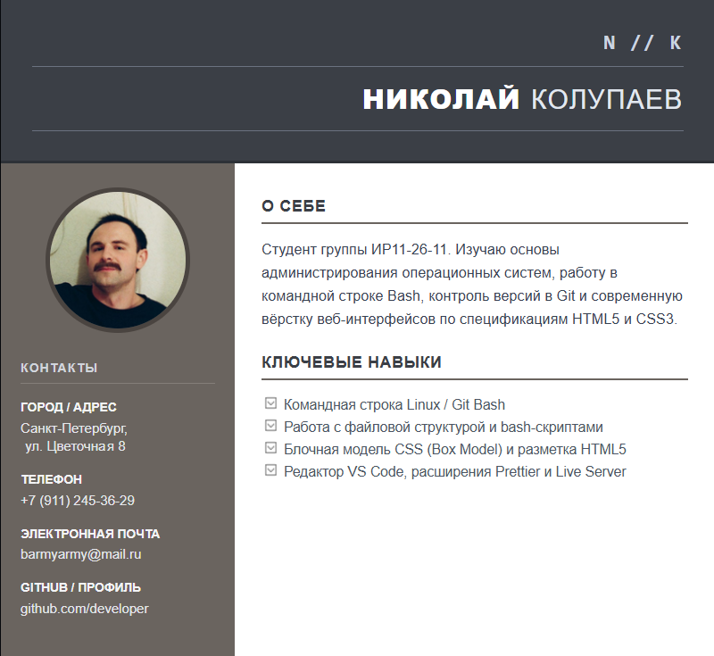

Задание: сверстать страницу резюме с тёмной шапкой, левой колонкой контактов и круглой фотографией по представленному образцу.
Вот как должна выглядеть страница в браузере. Макет адаптирован для начинающих: круглая аватарка расположена внутри боковой колонки, двухколоночная структура строится через display: flex, а маркеры списка оформлены кастомными стрелками-иконками.

| Свойство | Зачем нужно в этом резюме | Пример в макете |
|---|---|---|
| box-sizing | Включает внутренние отступы и рамки в общий размер блока, чтобы вёрстка не разъезжалась в стороны. | box-sizing: border-box; |
| display: flex | Ставит прямые дочерние блоки в один горизонтальный ряд (левая колонка и правый контент рядом). | display: flex; |
| flex-shrink | Запрещает сжимать блок. Значение 0 гарантирует, что левая колонка контактов не сплющится, даже если в правом блоке будет очень много текста. |
flex-shrink: 0; |
| flex: 1 | Указывает правому блоку занять абсолютно всё оставшееся свободное пространство по ширине. | flex: 1; |
| list-style-image / list-style-type | Заменяет стандартные круглые маркеры списка на кастомные иконки, мини-изображения или строгие квадратные метки. | list-style-type: square; |
| max-width | Задает предельную ширину листа резюме на экране, чтобы строки не растягивались на весь монитор. | max-width: 640px; |
| margin: 0 auto | Центрирует блочный элемент по горизонтали страницы за счет автоматических полей слева и справа. | margin: 30px auto; |
| border-radius | Скругление углов. Значение 50% при равных ширине и высоте превращает фото в идеальный круг. |
border-radius: 50%; |
| object-fit | Защищает фотографию от сплющивания и деформации при принудительно заданной ширине и высоте. | object-fit: cover; |
| border / border-bottom | Отрисовывает рамку вокруг элемента либо аккуратную разделительную черту снизу/сверху. | border-bottom: 1px solid #444; |
| letter-spacing | Регулирует расстояние между буквами (кернинг) для стильных строгих заголовков. | letter-spacing: 1px; |
| text-transform | Преобразует буквы в заглавные (uppercase) без необходимости перепечатывать текст в HTML. | text-transform: uppercase; |
| line-height | Высота строки. Добавляет «воздух» между строками текста, повышая удобство чтения. | line-height: 1.6; |
| box-shadow | Добавляет мягкую тень листу резюме, визуально приподнимая его над темным фоном окна браузера. | box-shadow: 0 10px 30px rgba(0,0,0,0.5); |
Работа принимается на защиту только при выполнении всех требований чек-листа без пропусков.